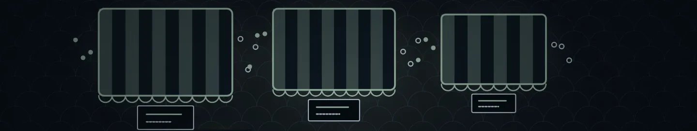
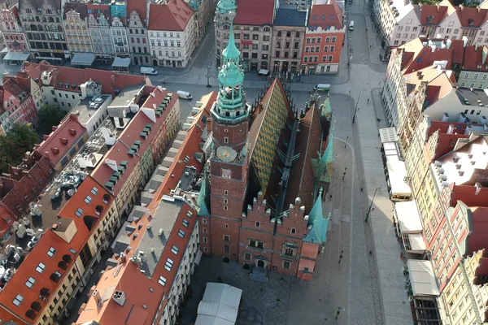

De … største af temaets … selskaberTemaets … selskaber
Tryk på et selskab for at se mere om det.
Vis alle … selskaber i temaet
Andele i PMINDI, den udgave af fonden, der udbetaler udbytte, pr. … (fondens data).

Et af de … temaer i NewDeal Invest
Hvem bruger platformen, og hvem betaler den?
Platforme forbinder forskellige parter, men tjener ikke penge på samme måde. Brug torvet til at skelne mellem handel, reklamer, transport og ejerskab i andre selskaber.

… %
af PMINDI er placeret i temaet Platformsøkonomi.
Andele i PMINDI, den udgave af fonden, der udbetaler udbytte, pr. … (fondens data).
De … temaer efter størrelse. Platforme er nr. ….
Det har vi skrevet
Ordret uddrag af NewDeal Invests egne ugebreve og indlæg om temaet, med dato og link til hele teksten. Det er ikke en anbefaling.
»Core Marketplace Revenue består grundlæggende af de fees og reklameindtægter, Shopee genererer på sin marketplace. Det er efter min mening den centrale økonomiske motor i Shopee og dermed et af de vigtigste tal i hele Sea Limiteds regnskab.«
Nævner: Sea Limited
Læs hele teksten på bloggen (åbner i nyt vindue)»Derfor var interessen stor for superApp platforme, som Amazon og MercadoLibre, fordi hvis de først vandt i en geografisk region, var det en voldsomt attraktiv situation.«
Nævner: Amazon, MercadoLibre
Læs hele teksten på bloggen (åbner i nyt vindue)Platformsøkonomi
Tegningen viser et torv. Jo større en bod er, jo mere fylder den i fonden. På hvert skilt står, hvem der mødes, og hvem der betaler. Tryk på en bod for at se skiltet og selskaberne.
Tryk på et selskab for at se, hvad det laver.
Tryk på et selskab for at se, hvad det laver.
Tryk på et selskab for at se, hvad det laver.
Tryk på et selskab for at se, hvad det laver.
Tryk på et selskab for at se, hvad det laver.
SoftBank Group og Prosus driver ikke selv en bod. De ejer andele i andre selskaber, også nogle, der driver platforme. SoftBank Group ejer gennem teleselskabet SoftBank Corp. bl.a. LY Corporation (medier, annoncer og handel) og betalingsappen PayPay.
Tryk på et selskab for at se, hvad det laver.
Apples telefoner og computere er den port, mange går ind ad, når de bruger apps.
Tryk på et selskab for at se, hvad det laver.
SoftBank Group driver ikke selv en platform, men ejer andele i andre selskaber.
Det gør Prosus også. Selskabet ejer selskaber inden for handel og tjenester på nettet i Latinamerika, Indien og Europa og en stor del af det kinesiske selskab Tencent.

Naboerne
Disse tre selskaber hører først og fremmest til et andet tema, men har også en platformsdel.
Global-e og Kaspi.kz laver også noget, der hører til temaet Platformsøkonomi. I fondens opdeling tælles selskaberne kun med under Fintech.
Set udefra
Her er udvalgte opslag og videoer fra medier, universiteter og selskaber. Opslag, som teamet bag NewDeal Invest har delt, er mærket. De er ikke fondens holdning.
Se efter: Hvem deltager, og hvilken del af aktiviteten giver platformen en indtægt?
Se efter: Hvem deltager, og hvilken del af aktiviteten giver platformen en indtægt?
Se efter: Hvem deltager, og hvilken del af aktiviteten giver platformen en indtægt?
Se efter: Hvem deltager, og hvilken del af aktiviteten giver platformen en indtægt?
Se efter: Hvem deltager, og hvilken del af aktiviteten giver platformen en indtægt?
Wall St Engine @wallstengine · på engelsk
Delt af Mads Christiansen fra teamet bag NewDeal Invest Kort fortalt Kontoen Wall St Engine beskriver, at Meta lancerer Muse, en personlig AI-assistent, der selv kan udføre opgaver på tværs af apps og nettet, fx sende mails og betale for varer, når brugeren har godkendt det. Ifølge opslaget får hver bruger sin egen afgrænsede del af Metas computere, og en anden AI-assistent tjekker handlingerne.
Hvad skal du lægge mærke til? Læs opslaget sammen med afsnittet om meta under sociale medier og annoncering. Hvem deltager, og hvilken del af aktiviteten giver platformen en indtægt?
Mads Christiansens deling på X (åbner i nyt vindue) · Metas egen meddelelse om Muse (åbner i nyt vindue)
Reuters @Reuters · på engelsk
Kort fortalt Ifølge Reuters beder udgivere og annoncører konkurrencemyndighederne i EU og Storbritannien om at sætte Metas nye kommercielle vilkår på pause.
Hvad skal du lægge mærke til? Læs opslaget sammen med afsnittet om sociale medier og annoncering. Hvem deltager, og hvilken del af aktiviteten giver platformen en indtægt?
TechCrunch @TechCrunch · på engelsk
Kort fortalt Ifølge TechCrunch indfører Walmart teknologi, der lader AI-agenter handle på kundernes vegne med kontrol over forbrug og godkendelse af betalinger. TechCrunch skriver, at Amazon til gengæld blokerer AI-agenter fra at handle på sit websted.
Hvad skal du lægge mærke til? Læs opslaget sammen med afsnittet om e-handel. Hvem deltager, og hvilken del af aktiviteten giver platformen en indtægt?
Opslagene er udvalgt af teamet bag NewDeal Invest. Afsenderne og de nævnte selskaber står ikke bag denne side, og opslagene er ikke fondens vurdering.
Tryk på et selskab for at se mere om det.
Andele i PMINDI, den udgave af fonden, der udbetaler udbytte, pr. … (fondens data).
Udvalgte offentlige opslag om selskaberne i temaet. Opslagene er andres og ikke NewDeal Invests holdning.
Henter opslag …
Kilder: fondens data og selskabernes egne årsrapporter, linket ved hvert punkt.
Videre